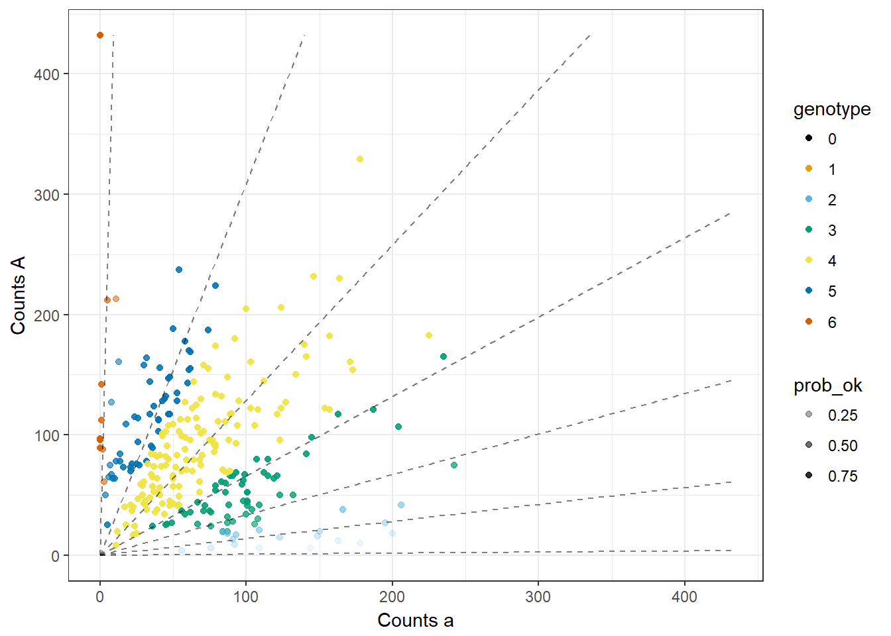
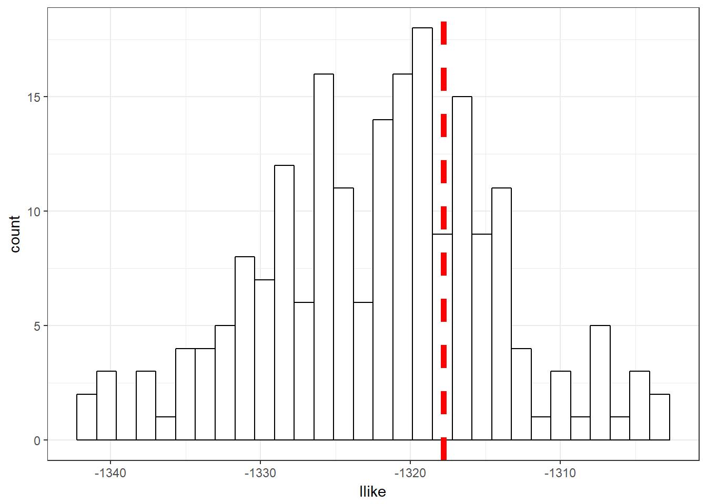
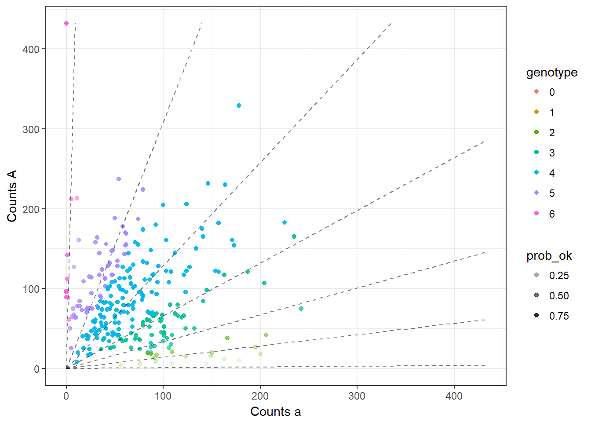
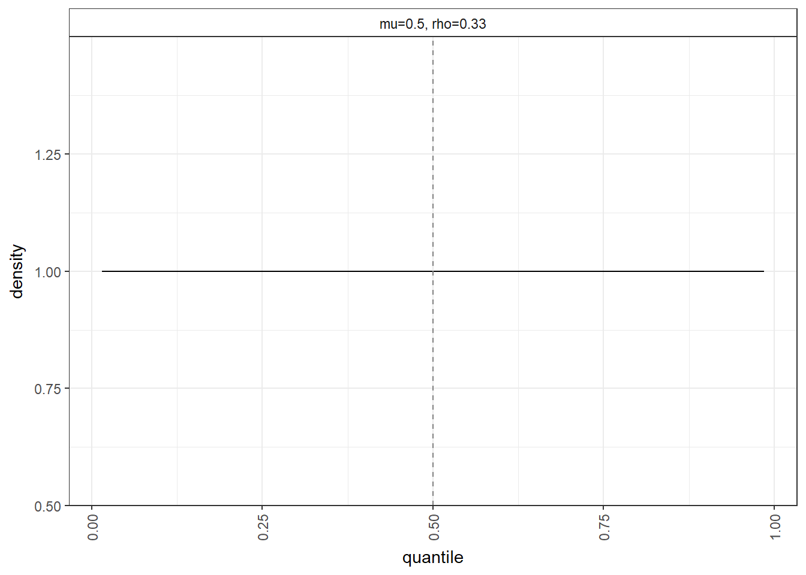
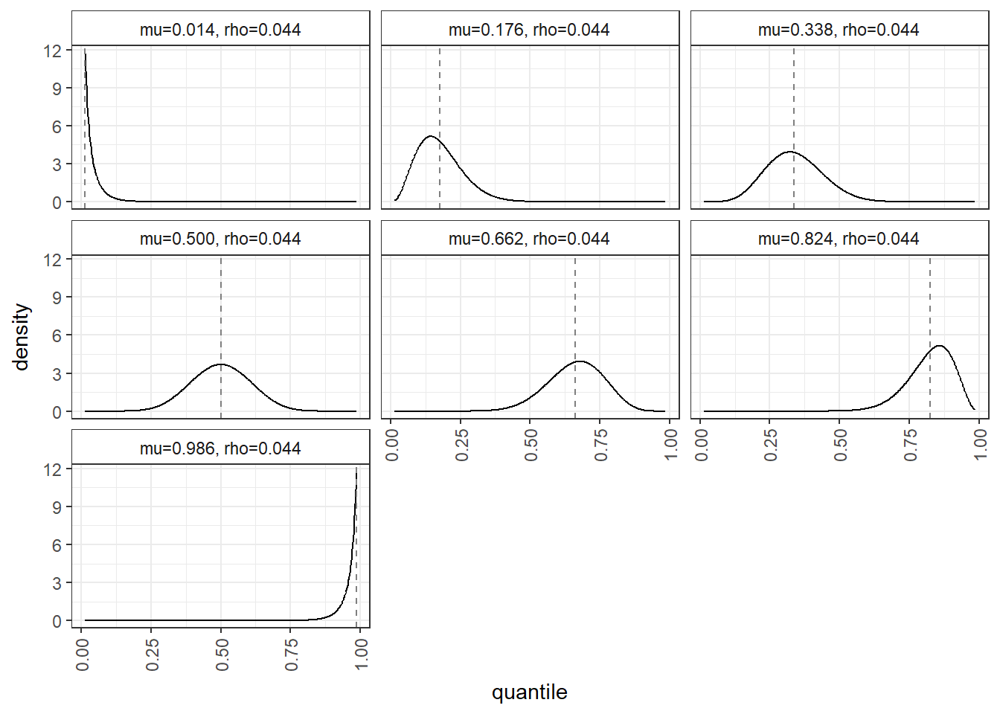

Here, I look at the highly dispersed SNP. The log-likelihood plots don’t show anything major. The average of maxpostprob is really low.
Read in Data
library(updog)
library(tidyverse)## Loading tidyverse: ggplot2
## Loading tidyverse: tibble
## Loading tidyverse: tidyr
## Loading tidyverse: readr
## Loading tidyverse: purrr
## Loading tidyverse: dplyr## Conflicts with tidy packages ----------------------------------------------## filter(): dplyr, stats
## lag(): dplyr, statsload("../data/subset_David.Rdata")
ploidy <- 6
cdat_list <- list()
pdat_list <- list()
for (col in 1:length(subset_david)){
dat <- as_data_frame(subset_david[[col]])
dat$id <- rownames(subset_david[[col]])
names(dat) <- c("A", "a", "id")
dat <- dat %>% mutate(ocounts = A, osize = a + A)
pdat <- filter(dat, grepl("Beauregard", id) | grepl("Tanzania", id)) %>%
separate("id", c("line", "id"), sep = "_") %>%
group_by(line) %>%
summarise(pcounts = sum(ocounts), psize = sum(osize)) %>%
ungroup()
cdat <- filter(dat, !(grepl("Beauregard", id) | grepl("Tanzania", id)))
cdat_list[[col]] <- cdat
pdat_list[[col]] <- pdat
}Fit updog.
cdat <- cdat_list[[3]]
pdat <- pdat_list[[3]]
uout <- updog_vanilla(ocounts = cdat$ocounts, osize = cdat$osize,
ploidy = ploidy,
p1counts = pdat$pcounts[1], p1size = pdat$psize[1],
p2counts = pdat$pcounts[2], p2size = pdat$psize[2],
print_val = FALSE, non_mono_max = 1)
stopifnot(dupdog(uout) == uout$llike)
plot(uout, plot_beta = FALSE, use_colorblind = TRUE)## Warning: Removed 1 rows containing missing values (geom_point).
## Warning: Removed 1 rows containing missing values (geom_point).
## Warning: Removed 1 rows containing missing values (geom_point).
## Warning: Removed 1 rows containing missing values (geom_point).
uout$llike## [1] -1318Simulate a lot of log-likelihoods. I don’t see any major discrepancy here.
itermax <- 200
llike_vec <- rep(NA, length = itermax)
for (index in 1:itermax) {
usim <- rupdog(uout)
llike_vec[index] <- usim$llike
}
llike_dat <- data_frame(llike = llike_vec)
ggplot(data = llike_dat, mapping = aes(x = llike)) +
geom_histogram(bins = 30, fill = "white", color = "black") +
theme_bw() +
geom_vline(xintercept = uout$llike, lty = 2, col = 2, lwd = 2)
But the average maxpostprob is really small. We can estimate the proportion of points we expect to misclassify:
1 - mean(uout$maxpostprob)## [1] 0.6398Indeed, the most sure we can possibly be about a SNP for these data is about 0.7
max(uout$maxpostprob)## [1] 0.7348There are both many outliers and the overdispersion is large. The bias and seq-error both look ok.
uout$out_prop## [1] 0.2128uout$bias_val## [1] 1.516uout$seq_error## [1] 0.01403uout$od_param## [1] 0.04393plot(uout, ask = FALSE)## Warning: Removed 1 rows containing missing values (geom_point).
## Warning: Removed 1 rows containing missing values (geom_point).
## Warning: Removed 1 rows containing missing values (geom_point).
## Warning: Removed 1 rows containing missing values (geom_point).
sessionInfo()## R version 3.4.0 (2017-04-21)
## Platform: x86_64-w64-mingw32/x64 (64-bit)
## Running under: Windows 10 x64 (build 15063)
##
## Matrix products: default
##
## locale:
## [1] LC_COLLATE=English_United States.1252
## [2] LC_CTYPE=English_United States.1252
## [3] LC_MONETARY=English_United States.1252
## [4] LC_NUMERIC=C
## [5] LC_TIME=English_United States.1252
##
## attached base packages:
## [1] stats graphics grDevices utils datasets methods base
##
## other attached packages:
## [1] dplyr_0.5.0 purrr_0.2.2 readr_1.1.0 tidyr_0.6.1
## [5] tibble_1.3.0 ggplot2_2.2.1 tidyverse_1.1.1 updog_0.1.0
##
## loaded via a namespace (and not attached):
## [1] Rcpp_0.12.11 cellranger_1.1.0 compiler_3.4.0 plyr_1.8.4
## [5] forcats_0.2.0 tools_3.4.0 digest_0.6.12 lubridate_1.6.0
## [9] jsonlite_1.4 evaluate_0.10 nlme_3.1-131 gtable_0.2.0
## [13] lattice_0.20-35 psych_1.7.3.21 DBI_0.6-1 yaml_2.1.14
## [17] parallel_3.4.0 haven_1.0.0 xml2_1.1.1 httr_1.2.1
## [21] stringr_1.2.0 knitr_1.16 hms_0.3 rprojroot_1.2
## [25] grid_3.4.0 R6_2.2.0 readxl_1.0.0 foreign_0.8-67
## [29] rmarkdown_1.5 modelr_0.1.0 reshape2_1.4.2 magrittr_1.5
## [33] ggthemes_3.4.0 backports_1.0.5 scales_0.4.1 htmltools_0.3.6
## [37] rvest_0.3.2 assertthat_0.2.0 mnormt_1.5-5 colorspace_1.3-2
## [41] labeling_0.3 stringi_1.1.5 lazyeval_0.2.0 munsell_0.4.3
## [45] broom_0.4.2This R Markdown site was created with workflowr